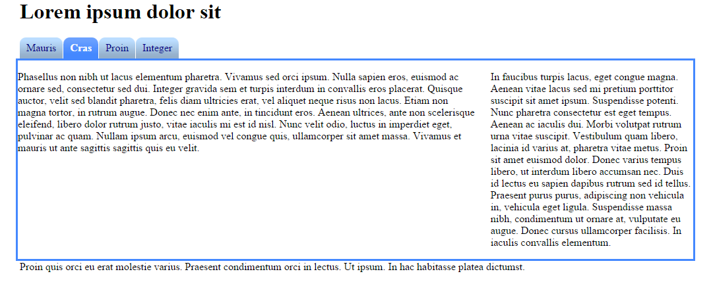

Objectives
Restructure the output of the last lab to participate in a tabbed navigation structure. Do this by introducing a simple tabbed design into the site to provide the user with the visual metaphor for navigation. We then 'wire-up' these tabs to lead the user through the site. We will do this twice: once for the example content we laid out in last weeks lab. Then we will apply this to the app store site, using the same CSS rules.
Setup
For this lab, start with this project here:

This archive contains the following pages:
Open each file and save, or alternatively in your browser, you can select 'save link as' or equivalent and save these into your own workstation. To do this you will first have to locate the actual folder in which the lab05 project is stored, save the four files into that folder.
Either way, we wish to use the above as the basis for this lab.
Navigation
On a web page the navigation can be thought of as the table of contents. You expect the table of contents to direct you to the content you want to access.
In this lab we will create a tabbed navigation section that will look like this:

In HTML the element that best suits a table of contents is the <ol> element. We will use the ordered list to construct the navigation section of the web page.
Here's the code we have already in our web page:
<div id="navigation">
<ol>
<li><a href="home.html">Mauris</a></li>
<li><a href="page1.html"> Cras </a></li>
<li><a href="page2.html">Proin</a></li>
<li><a href="page3.html">Integer</a></li>
<li>Curabitur</li>
<li>Integer</li>
<li>Suspendisse</li>
<li>Quisque</li>
</ol>
</div>
What we have is an item for each link to a page. Next we want to ensure our navigation tells the user which page they are currently viewing. We do this by added a class attribute to the appropriate list item. So if we edit the home.html page first we want to add the class attribute "current" to the first list item (Mauris) as below:
<div id="navigation">
<ol>
<li class="current"><a href="home.html">Mauris</a></li>
<li><a href="page1.html"> Cras </a></li>
<li><a href="page2.html">Proin</a></li>
<li><a href="page3.html">Integer</a></li>
<li>Curabitur</li>
<li>Integer</li>
<li>Suspendisse</li>
<li>Quisque</li>
</ol>
</div>
We must also do this for page1 2 and 3. So for page1.html add the class attribute "current" to the second list item (Cras). For page2.html add it to the third list item (Proin) and for page3.html add it to the fourth list item (Integer)
When viewing out web pages this makes no visible difference as all we are doing is identifying those elements we will no go on to style in a particular way.
The Image
Make sure the 'navigation' division is located towards the top of the page structure between the header and the maincontent. (If you copied the output of last weeks lab, it will be near the end) If we were to take a view of any of the pages using the folding feature if eclipse, we would like to see this:

There are several methods for creating nice navigation on your site, the method we teach in this lab is a pure CSS method using one image for the tabs on the navigation menu. It is possible to use multiple images however:
- Each image has a header section. The filesize of six small images would be about twice as big as the filesize of one big image.
- Each image requires its own HTTP request. This wastes both bandwidth and server processing time. Due to the images being requested separately this also means that the page will take longer to load, especially if the user's browser downloads the files one by one.
- There is no way to apply the method used here with more than two images for one tab, since each tab consists of only two elements (
<li> and<a>) and only one background image can be applied to an element.
There are two states for each tab, selected and not selected.
Each state will take up one row of the image and will be 500 pixels wide.
This is the image here:

Save this image into your Lab05 folder. For this lab it is the only image we will use so no need to create an images folder. You can see that the image has two parts, the first top row will be used for non selected tabs, the second lower row will be used for the selected tab. The image also has curved corners left and right. This is important and impacts how we write our CSS so that each tab has a curve left and right regardless of the size of the tab.
CSS rules
The first thing we'll do is to style the ordered list that represents our menu:
At the moment our navigation is set to be 20%, if we want our navigation to show as a horizontal set of tabs we need that percentage to change.
Edit your css file so it shows:
#navigation
{
width: 100%;
float: left;
}
In your home.html file add the following id to the <ol> element:
<div id="navigation">
<ol id="menu">
<li><a href="home.html">Mauris</a></li>
<li><a href="page1.html"> Cras </a></li>
<li><a href="page2.html">Proin</a></li>
<li><a href="page3.html">Integer</a></li>
<li>Curabitur</li>
<li>Integer</li>
<li>Suspendisse</li>
<li>Quisque</li>
</ol>
</div>
Next add the following rule to the home.css file:
ol#menu {
height: 2em;
list-style: none;
margin: 0;
padding: 0;
}
So, what's happening here? We are setting the height of the menu (which will be our bar of tabs) to 2 em units (which is twice the height of the current font.) In most browsers, this is automatically calculated because all the list items (tabs) will be 2 em units in height.
Then we removed the numbers next to the list by removing its list style.
The margin and padding are both set to 0 to avoid any spacing inside and outside the list.
Next we'll style the default state for each list item (tab) inside the menu:
ol#menu li {
background: url(tabs.gif);
float: left;
margin: 0 1px 0 0;
padding-left: 10px;
}
In this rule we set margin to be 0 1px 0 0; this means the same as margin-top: 0; margin-right: 1px; margin-bottom: 0; margin-left: 0;. We reset all margins of the tab because some browsers give the <li> element a margin by default. The 1 pixel to the right leaves a tiny gap between the tabs. You can adjust this value to your liking.
Last, but not least, we set the left padding to 10 pixels. This is an important value which depends on the tab image. It has to be at least as wide as the left part of the tab. Without the padding, the left part will be covered by the background image of the <a> element.

Here we can see the background image appear for each list item however our list items are not in a row. They are floating left but we want them accross the top of the maincontent. We need to change the size of the navigation div so it is 100% of it's container.
#navigation
{
width: 100%;
float: left;
}
<<<<<<< HEAD
Next we deal with the <a> element nested in the <li> element.
ol#menu a
{
background: url(tabs.gif) 100% 0;
border: dashed thin;
}
For the background, we are using the same image as for the <li> element, with added position coordinates. 100% 0 means 100% to the right, no offset vertically. Since the <a> element is inside the <li> and thus on top of it, this background image will be drawn over the background image of the <li> element. So, the only visible part of the <li> element will be the 10 pixels of padding that we specified earlier on the left. This 10 pixel part can be seen to the left of the dashed border drawn around the <a> element. Together, these background images form a whole tab which can be anywhere from 20 to 490 pixels wide. This forms the two rounded ends of each tab. You can compare to the other four tabs that have no <a> elements (Curabitur, Integer, Suspendisse and Quisque) and thus have no rounded right hand corner.

Next we deal with the colour of text, and the size of the <a> element by adding the following:
ol#menu a
{
background: url(tabs.gif) 100% 0;
color: #008;
float: left;
line-height: 2em;
padding-right: 10px;
text-decoration: none;
border: dashed thin;
}
We specify a dark blue color for the text inside the tab. Since the text is a link, we have to specify the color specifically for the <a> element, because otherwise the default color (usually clear blue) would overwrite it.
The element should have display: block; because it should act as a block element, rather than an inline element (i.e. text.) This means that I can give it padding, margin, width, height and all that. However, since MSIE6 gives the element the wrong width, float: left; is used because it implies display: block; with the addition of making the element shrink to its smallest possible size (taking content and padding into account.) We don't have to worry about the element "floating" since it has no sibling elements.
We give the element a line height because it's essentially the same as height (as long as the text stays on one line), with the difference that it is vertically centered.
The padding to the right should be just as much as it was for the <li> element, so that the text will be centered. If you want more spacing to the left and/or right, you modify the left padding in the <li> element and the right padding in this one.

Selected Tab
Now we want to offset the image when the tab is selected so that the colour changes to the lower row of the image.
To do this we target the list item that is in classified as current. (step 1)
ol#menu li.current { background-color: #48f; background-position: 0 -60px; }
For the currently selected tab, we change the background color to something that fits the color of the active state of the tab. More importantly, we change the offset, or position, of the background image to move 60 pixels up. This is because one row in the tab image was 60 pixels high, and we want the second row, so we move the image up, revealing its lower part.
Notice that we are not using the background shortcut here. That's because I only want to override some of the properties, and leave the background-image property as it was in the <li> rule.

In the image above you can see the new blue colour behind the <a> element. Next we must set the image offset for the <a> element itself
ol#menu li.current a
{
background-position: 100% -60px;
color: #fff;
font-weight: bold;
}

We have done the same for the the <a> element except its the right side so the offset is -60px, we have also change the font to white and bold.
Make sure each page has the correct id and class names for the navigation menu and remove from the list in the navigation div those list items we don't use. You also need to fix the main content so it fills the width of the body so the final version should look like this:
Exercises
Completed Lab
This is a complete archive of this lab if you are having difficulty:
This is the completed app store lab:
Exercise 1
We now want to apply the navigation tabs to the app store.
We would like to add a set of tabs for home, deals and about that is positioned just above the main heading.

Work through the steps needed to
- Add the menu section in your html files
- Name the class and id's correctly
- Add the css rules
- Test to make sure your menu works.